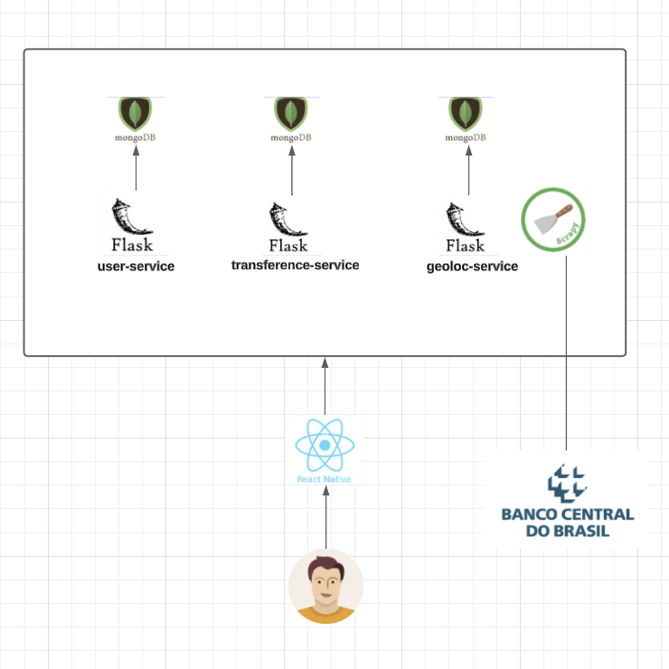
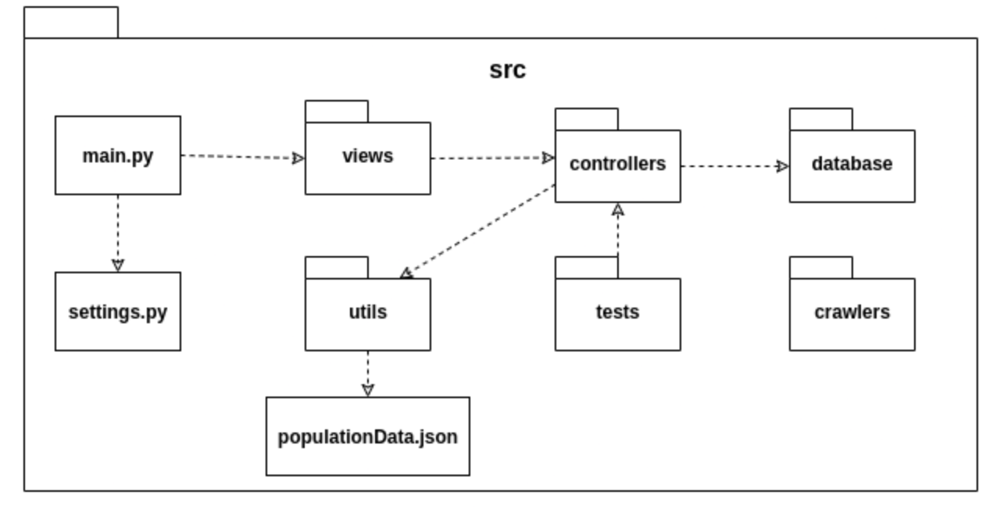

Arquitetura
1. Introdução
1.1. Finalidade
Este documento tem como objetivo fornecer uma visão geral da arquitetura do aplicativo SwiftPix. Visa apresentar de forma clara o fluxo de dados, o comportamento da aplicação e como as partes se relacionam, bem como expor de maneira objetiva as decisões arquiteturais que foram tomadas em relação ao projeto.
1.2. Escopo
Este documento de arquitetura se aplica ao SwiftPix. Estão descritos neste documento os padrões de arquitetura adotados, frameworks e linguagens escolhidas.
1.3. Definições, Acrônimos e Abreviações
- API - Application Programming Interface: conjunto de rotinas e padrões de programação que viabiliza a comunicação entre dois sistemas ou plataformas distintas.
- HTTP - Hypertext Transfer Protocol: protocolo de transferência e comunicação de dados.
- Backend - Parte da aplicação responsável pela conexão com o banco de dados e gerência das informações que serão enviadas ao frontend.
- Frontend - Parte da aplicação responsável pela interação com o usuário, utilizando recursos consumidos do backend.
- SSP - Secretaria de Estado de Segurança Pública.
- SQL - Structured Query Language: Linguagem declarativa de busca para bancos de dados relacionais.
- JSON - JavaScript Object Notation
- REST - Representational State Sransfer
2. Representação Geral da Arquitetura

A aplicação tem um cliente de frontend mobile feito em React Native e três microserviços em seu backend. Um dos microserviços é o User Service, uma API REST desenvolvida em Flask, que trata todos os dados dos usuários,enviando-os para serem armazenados em um banco de dados não-relacional, MongoDB.
O segundo microserviço é o Transference Service que realiza as transações via PIX, faz consulta de saldo e gera comprovante de transferência, também salva os dados no mongoDB.
O terceiro microserviço é o Geoloc Service é uma API de geolocalização para identificar qual o ip do usuário afim de fazer a transferência para a moeda do país em que a pessoa está realizando o PIX.
As comunicações entre todos os componentes são feitas com o protocolo HTTP e o tipo de conteúdo transmitido dentro do sistema é documento JSON.
3. Tecnologias
O diagrama abaixo mostra quais são as tecnologias usadas em cada parte do sistema. Em seguida, essas tecnologias são descritas brevemente.
3.1. Flask
Flask é um microframework de aplicativos web em Python. Foi designado para se ter um início de desenvolvimento simples, com a habilidade de escalar para aplicações complexas. Flask oferece sugestões, mas não força dependências e layouts ao projeto.
3.3. MongoDB
MongoDB é um banco de dados orientado a documentos não relacional caracterizado como NoSQL. Ele possui uma maior versatilidade para armazenar os dados. Ele é usado no Secretary Service para armazenar os dados obtidos das SSPs, cuja modelagem pode variar entre as secretarias.
3.4. React Native
React Native é um framework em JavaScript para desenvolver aplicações nativas tanto para Android como para IOS. É baseada em React, uma biblioteca do Facebook criada para desenvolver interfaces de usuário, porém em vez de adaptar o código para browsers, ele adapta para dispositivos móveis.
4. Requisitos e Restrições de Arquitetura
-
Aplicação deve ser construída baseada na arquitetura de microsserviços, na qual o backend será desenvolvido em Flask e o frontend em React Native.
-
O aplicativo será funcional em celulares com o sistema operacional Android e acesso à loja de aplicativos Play Store.
-
O celular necessita de conexão estável de internet para uso completo e atualizado do aplicativo.
-
O geoloc-service deve ser desenvolvida para consumir dados do site do BACEN.
5.1. User-Service
Este serviço tem como base o conjunto de princípios do padrão REST. Ele possui três camadas (View, Controller e Database) com funções e responsabilidades bem estabelecidas, o que permite uma estruturação do serviço que facilita a delegação de tarefas, a manutenção e a evolução. Em sua implementação, os seguintes módulos são usados:
- src/ - Diretório que contém todo o código fonte da API.
- main.py - Arquivo que tem a responsabilidade de inicializar o serviço. Nele é criada a instância da aplicação utilizada para sua execução através do uso das configurações já estabelecidas, e também é realizado o registro das rotas (blueprints) criadas nas views.
- settings.py - Arquivo que contém todas as configurações do servidor e de log.
- views/ - Diretório que implementa as views que são as portas de entrada e saída do serviço, nele são definidos os endpoints e quais métodos HTTP são utilizados.
- controllers/ - Diretório que implementa as controllers do serviço para itermediar a comunicação entre as camadas de database e a de view. As controllers são responsáveis pela validação dos dados de entrada e demais regras de negócio.
- utils/ - Diretório onde se encontram os utilitários do projeto, como arquivos para formatação e validação de dados, além da declaração de constantes utilizadas no código.
- tests/ - Contém os testes unitários realizados sobre as funcionalidades das controllers.
O diagrama abaixo demonstra a interação entre as partes do serviço:

5. Frontend
O frontend está sendo implementado com uma organização em que cada módulo possui responsabilidades bem definidas, facilitando assim a manutenção e evolução do código:
- App.tsx - Arquivo que chama o componente principal do app que são as rotas.
- src/ - Diretório que contém basicamente todo o código fonte.
- routes.tsx - Arquivo responsável por carregar todas as telas. Para isso ele utiliza os módulos de navigation e de screens.
- navigation/ - Diretório que controla o fluxo de navegação entre as telas através tab bottom bar. Então ele faz uso do componente de screens.
- screens/ - Contêm as telas da aplicação. Para que as telas funcionem corretamente, esse módulo utiliza os diretórios de services, de componentes e o de utils.
- services/ - Diretório que contém os endpoints necessários para realizar as requisões feitas no app.
- components/ - Inclue os componentes que são comuns às telas da aplicação. Os componentes podem ser modals, inputs de formulários, botões, etc.
- utils/ - Armazena funções utilitárias reutilizáveis que serão disponibilizadas para todo o frontend.
- hooks/ - Diretório onde estão os gerenciandores de estado do usuário
- @types/ - Onde ficam algumas tipagens internas customizadas
6. Transference e Geoloc
Estes serviços possuem os mesmos princípios do User-Service, porém o Geoloc, além da API ele tem um módulo de crawler para o site do BACEN. Na API as camadas são as mesmas do User-Service, mas com menos responsabilidades por ser mais simples.
- src/ - Diretório que contém todo o código fonte da API.
- main.py - Arquivo que tem a responsabilidade de inicializar o serviço. Nele é criada a instância da aplicação utilizada para sua execução através do uso das configurações já estabelecidas, e também é realizado o registro das rotas (blueprints) criadas nas views.
- settings.py - Arquivo que contém todas as configurações do servidor e de log.
- views/ - Diretório que implementa as views que são as portas de entrada e saída do serviço, nele são definidos os endpoints e quais métodos HTTP são utilizados.
- controllers/ - Diretório que implementa a controller do serviço para itermediar a comunicação entre as camadas de database e a de view. A controllers está sendo responsável pela validação dos filtros e demais regras de negócio.
- database/ - Diretório responsável pela comunicação com o banco de dados não relacional. Nele é feita a conexão com o banco.
- utils/ - Diretório onde se encontram os utilitários do projeto, como arquivos para formatação e validação
- populationData.json - Arquivo com os dados populacionais usados para calcular a quantidade de crimes per capita
- tests/ - Contém os testes unitários realizados sobre as funcionalidades da controller.
- crawlers/ - Responsável pela implementação dos crawlers, com Scrapy e eventualmente Selenium, que realizam a extração metódica e automatizada de dados das SSPs.
O diagrama abaixo demonstra a interação entre as partes do serviço: 
7. Referências
JUNIOR, Cleber; LUI, Brian; HORINOUCHI, Lucas; SOUZA, Rômulo; HERONILDO, Francisco; TOYOSHIMA, Filipe; ALVES, Vitor; APOLINÁRIO, Jacó. Projeto HubCare: Documento de Arquitetura. Disponível em: https://cjjcastro.gitlab.io/2019-1-hubcare-docs/project/architecture-document/#5-visao-de-implementacao. LIMA, Alan; BERNARDO, Elias; MARQUES, Guilherme; BARREIROS, Leonardo; BLANCO, Matheus; FÉO, Pedro; RODRIGUES, Pedro; KADER, Saleh; SILVA, Sara; ALCÂNTARA, Shayane. Projeto QR Comer: Documento de Arquitetura. Disponível em: https://fga-desenho-2019-2.github.io/Wiki/seminario5/arquitetura/.
MENDES, Iasmin; VALÉRIO, Renato; JOÃO, Lucas; DAVI, Gabriel; SOUZA, Sousa; MACIEL, Lucas; FERNANDES, Weiller; GOMES, Matheus. Projeto Indica AI: Documento de Arquitetura. Disponível em: https://fga-eps-mds.github.io/2018.2-IndicaAi//docs/2018/08/28/architecture-doc.html.
MIGUEL, Alexandre; ALVES, Davi; GUEDES, Gabriela; GOULART, Helena; ROBSON, João; MENEZES, Leticia; GUILHERME, Luiz; SCHADT, Renan; VINICIUS, Rômulo; HUGO, Victor. Projeto Translate.me: Documento de Arquitetura. Disponível em: https://translate-me.github.io/docs/documentos/projeto/doc_de_arquitetura/.
Histórico de Revisão
| Data | Versão | Descrição | Autor |
|---|---|---|---|
| 27/05/2024 | 1.0 | Adicionando Introdução | Júlia Farias Sousa |